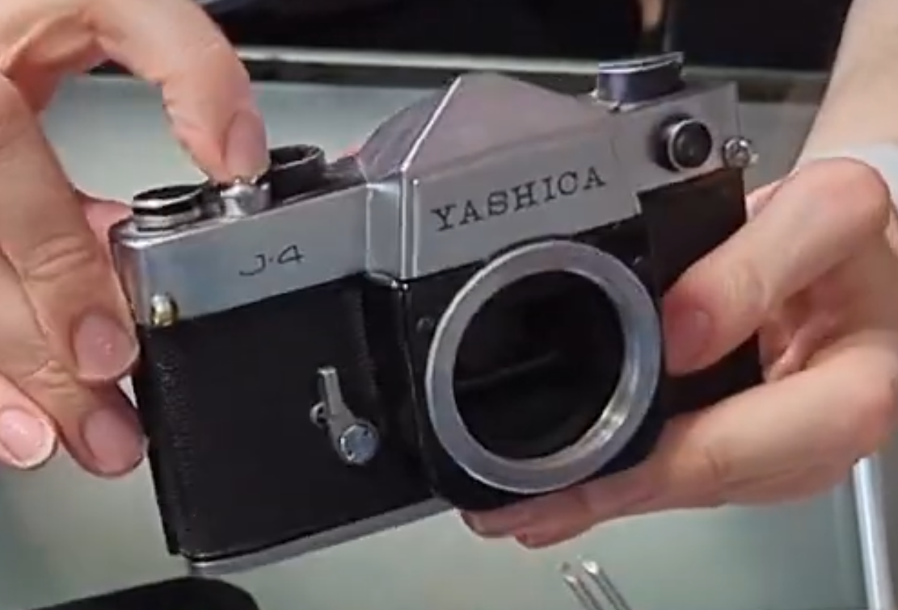
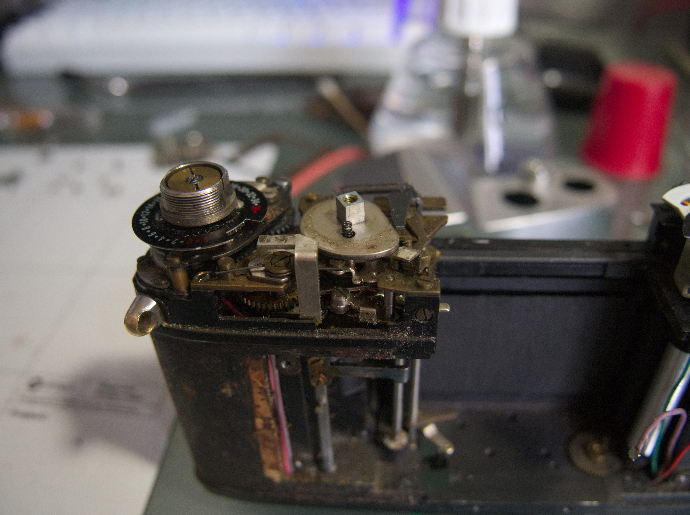
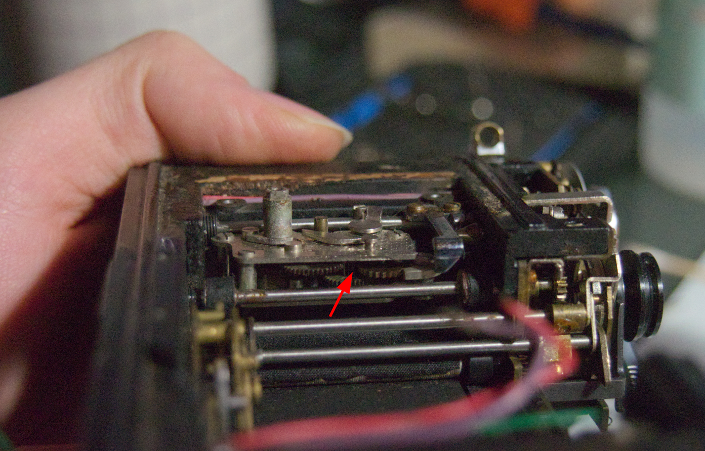
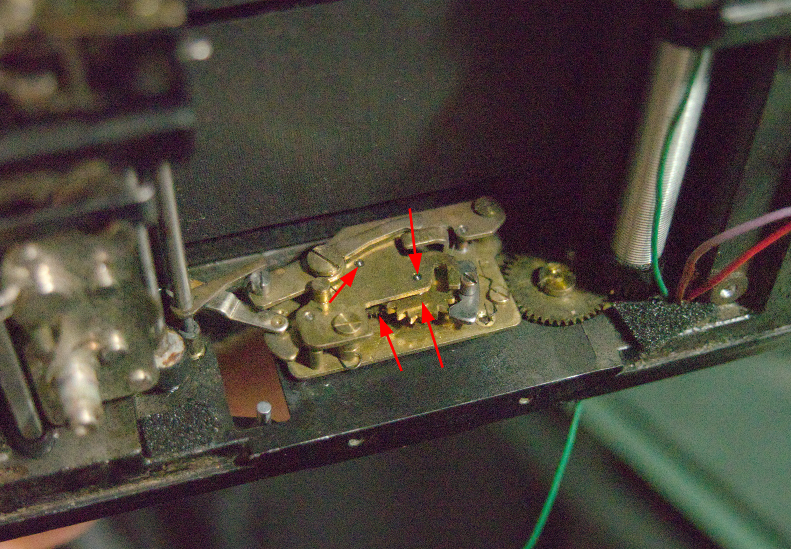
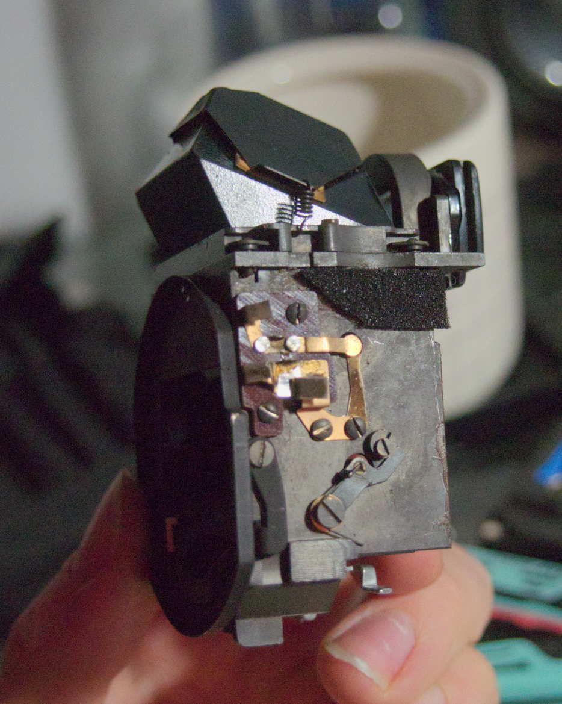
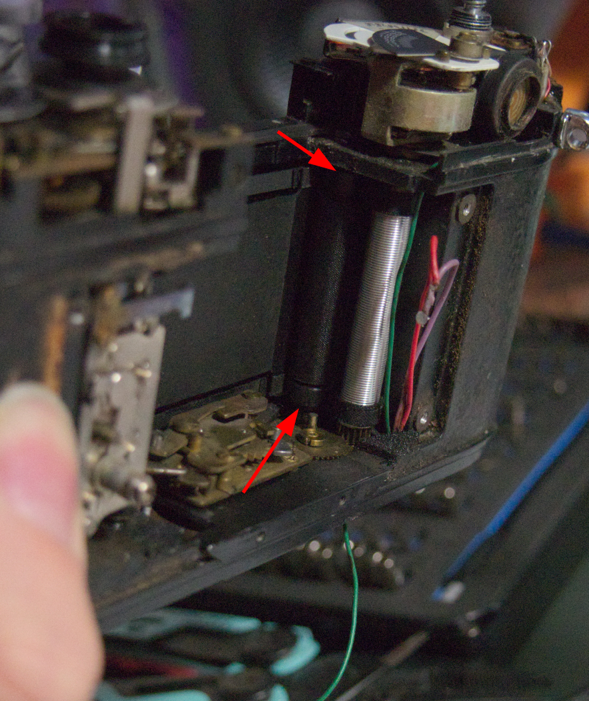
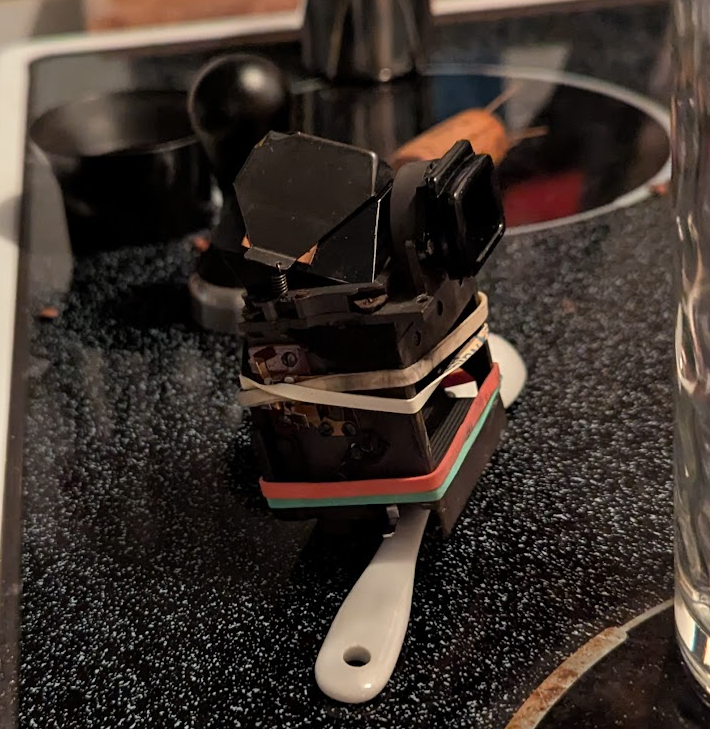
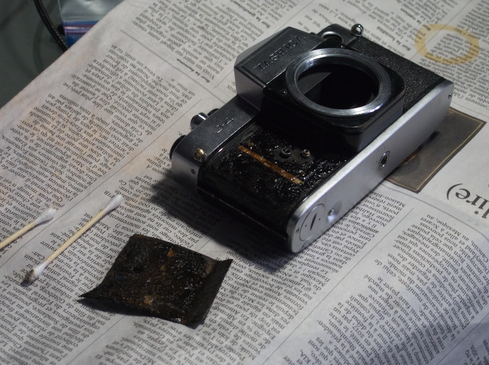
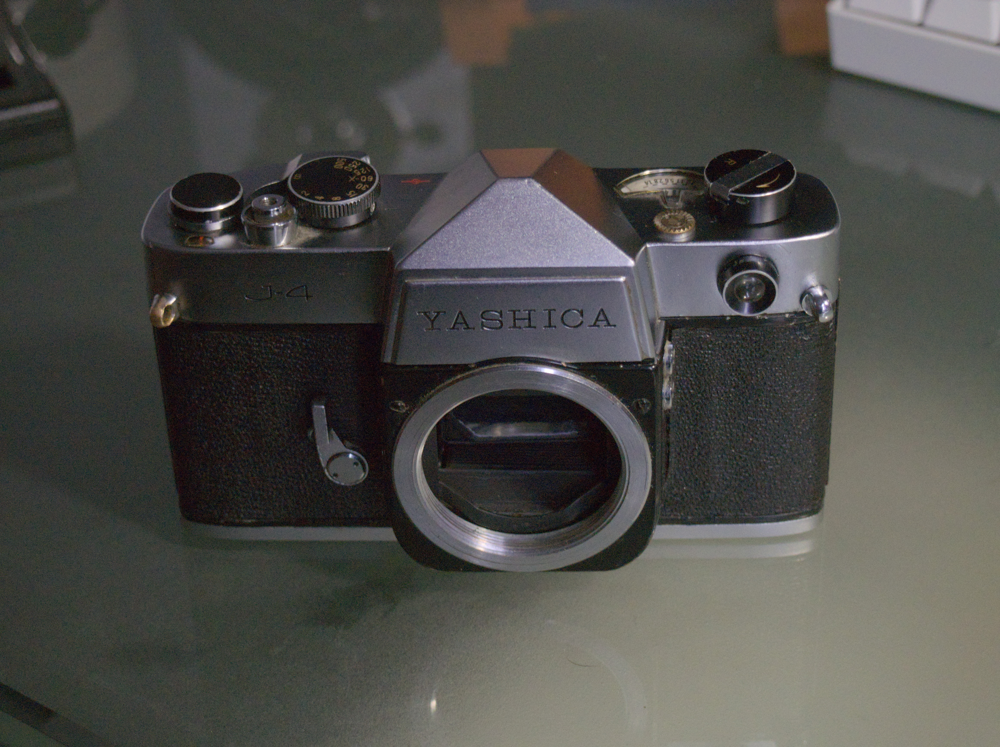

Yashica J-4 Repair
The other day, I found a Yashica J-4 "as is" for pennies on the dollar in the thrift store, coupled with a 50mm f/2.0 kit lens. I wouldn't have been so interested, but it came with a wicked strap, so bada bing bada boom, I'm the proud owner of a Yashica J-4.
It was pretty busted, the slower speeds would jam ~80% of the time they were fired, so it wasn't really operable. The self timer also wouldn't fire, so that needed some work too. As always, the lightmeter was inoperable, but that's par for the course. Maybe one day it could be recovered, but that wasn't in the cards.
I recorded the teardown process in this video, which can be seen as a companion piece to this blog post. While that is more of me fucking around and finding out, this post is more of a methodological description of what I could find wrong with the camera and how I fixed it, as well as a testimonial about the differences between the J-4 and J-7 that I could spot (barely anything…?)
I followed this blog post titled "Inside a Yashica J-7" by jabcam for the teardown, and I highly recommend reading through it if you're looking to do something like this for yourself.
The pictures in the blog post are either taken on my pixel 7 pro, or olympus om-d em-5 with a 14-42mm f/3.5 lens.

Figure 1: The Yashica J-4 before disassembly
The tools I used were:
- Trusty pliers (leatherman Signal)
- Spapper wrench (thorlabs spw801 - highly recommended)
- IPA dispenser - also highly recommended
- isopropyl (obviously)
- Air blower to get rid of dust
- iFixit screwdriver + bit kit
- Pinecil - the best soldering iron on the market
- Third hand for soldering
- Tweezers (don't even try this without some precision tweezers, they're the best investment you could make - useful for holding screws in place, holding wires, getting cleaning material into hard to reach places, depositing oil in very tight spots (on specific gears, say, or between the curtain and the camera body))
- iFixit magnetic parts tray (though most of the screws are non-magnetized, so…)
- New light seals + knife to cut to size
- Q-Tips to brush everything down
- Nyoil, to lubricate the high-speed mecahnisms (shutter mechanism, low-speed governor, and self-timer)
- J-B Weld to glue back the mirror box together
- Contact cement to put the leatherette back on
One clear difference between the J-4 and J-7 that caused me a headache was that the lightmeter hood is not screwed on on the J-4 - it's just press-fit into the body. It snaps into place, and you've got to unsnap it with a pair of pliers, rather than turning it CCW, as jabcam did. There are also only two screws on the top cover, rather than three.

Figure 2: The internals were FILTHY
Once I got the mirror box out, some pieces fell out of it since the glue had long since dried up, specifically a metal backplate that sits against the shutter, and a metal plate that sits between the mirror and the low-speed governor. We will revisit them later when I need to glue them back.
Once I got the self-timer off and cleaned it by immersing it in IPA and running the timer a few times, it would still not run. So, I applied some nyoil specifically to the gear on the inside of it that spins the fastest. It can be found somewhere in here…

Figure 3: I think you'll be able to figure out which gear it is. After doing this, the self-timer runs like new.
Similarly, the low-speed governor was just too gunked up. I applied some nyoil to several locations (somewhat liberally, firing it between applications to see if I had done enough and to determine which component needed the lubrication).

Figure 4: This one needed a lot more love
While I was at it, I cleaned up and replaced the accessible light seals.

Figure 5: The mirror box flash contacts weren't even soldered in when I took the camera apart!
After a thorough cleaning, I applied nyoil to the shutter mechanism, quite sparingly.

Figure 6: I did the same on the other side. Photo taken before said cleaning :)
Now, it was time to put the mirror box back in. The following video shows my conundrum there:
Finally, I glued it using J-B weld.

Figure 7: Thank god for shelf-stable glue!
Once those parts were in place, I was able to reassemble the camera without a hitch!
The last part was gluing the leatherette back on, and this worked great, and lined up perfectly.

Figure 8: Lining up these pieces is always stressful…
And finally, a working camera!
…almost…
Looks like the list of things to do is neverending. But this camera is ready for light use!

Figure 9: Ain't she a beaut!